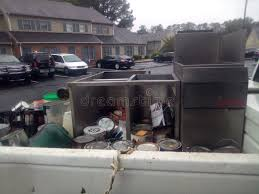
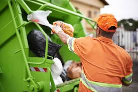
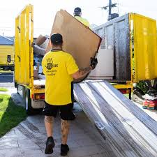
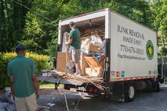
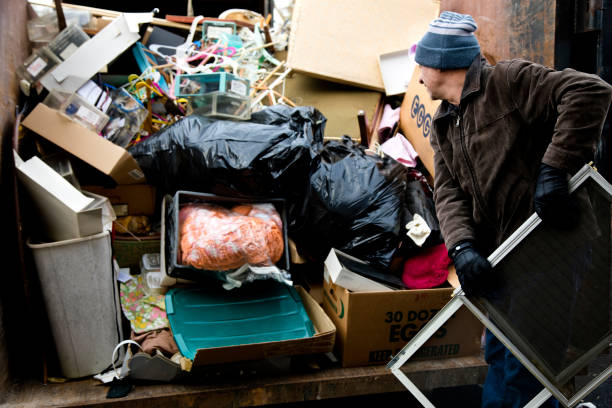

EcoClean Junk Solutions is a leading provider of eco-friendly junk removal services across the United States. Our commitment to environmental responsibility sets us apart from traditional junk removal companies. We prioritize recycling and donating usable items to minimize waste and reduce our carbon footprint. With a team of trained professionals and a fleet of dedicated trucks, we offer convenient and reliable junk removal services tailored to meet the unique needs of residential and commercial customers.
From furniture and appliance removal to construction debris and yard waste disposal, has the expertise and resources to handle any junk removal project efficiently and responsibly. Our services are designed to make the process hassle-free, with options for same-day service and flexible scheduling to accommodate your busy schedule. Trust EcoClean Junk Solutions for all your junk removal needs, and experience the peace of mind that comes with choosing an environmentally conscious and customer-focused company.
At EcoClean Junk Solutions, we understand the challenges of decluttering and disposing of unwanted items in your home. Our residential junk removal services are designed to make the process hassle-free and convenient for homeowners. Whether you need to get rid of old furniture, appliances, or general household clutter, our team is equipped to handle it all.
We specialize in the removal of bulky items such as sofas, mattresses, refrigerators, and washing machines. Our trained professionals will carefully navigate through your property, ensuring a safe and efficient removal process. By choosing our services, you can avoid the strain of carrying heavy items yourself, reducing the risk of injury and saving you valuable time and effort.
One of the key benefits of hiring a professional junk removal company like EcoClean Junk Solutions is the convenience factor. Outsourcing your junk removal needs to a professional company means you don't have to worry about the heavy lifting, hauling, and disposal. We take care of the entire process, from loading to responsible disposal or recycling, allowing you to focus on other priorities.


At EcoClean Junk Solutions, we understand the unique challenges businesses face when it comes to junk removal and disposal. Our commercial junk removal services are designed to cater to the needs of offices, retail spaces, warehouses, and other commercial establishments. We offer efficient and eco-friendly solutions for office cleanouts, furniture removal, electronic waste disposal, and more.
One of the key services we provide is electronic waste (e-waste) disposal. With the rapid advancement of technology, businesses often find themselves with outdated or broken electronics that need to be disposed of properly. We follow strict guidelines and regulations to ensure that e-waste is recycled or disposed of in an environmentally responsible manner, minimizing the impact on the environment.
Our team of professionals is trained to handle all types of commercial junk, from desks and filing cabinets to machinery and equipment. We understand the importance of minimizing downtime and disruptions to your business operations, which is why we work efficiently and follow a well-organized process. The junk removal industry generates $75 billion collectively each year, with businesses contributing a significant portion of this revenue.
Renovation and construction projects often generate significant amounts of debris, including wood, drywall, concrete, and other materials. Proper disposal of this waste is crucial for maintaining a safe and organized job site, as well as complying with local regulations. At EcoClean Junk Solutions, we offer comprehensive construction debris removal services to ensure your project runs smoothly from start to finish.
Our team is equipped to handle all types of construction and renovation waste, from small-scale residential projects to large-scale commercial endeavors. We understand the importance of efficient and timely debris removal, which can help minimize disruptions and keep your project on schedule. By partnering with us, you can focus on the core aspects of your construction work while we take care of the debris removal process.
One of the key benefits of our construction debris removal service is the safe handling of hazardous materials. We follow strict protocols and adhere to all relevant regulations to ensure the proper disposal of materials such as asbestos, lead-based paint, and other potentially harmful substances. This not only protects the environment but also safeguards the health and safety of your workers and the surrounding community.
Additionally, our construction debris removal services can help you save time and money. By outsourcing this task to professionals, you can avoid the need to allocate valuable resources and labor towards debris management, allowing your team to focus on the core aspects of the project. We also ensure that materials are properly sorted and recycled whenever possible, reducing the overall waste sent to landfills and minimizing your environmental impact.

At EcoClean Junk Solutions, we understand the hassle of dealing with yard debris and landscaping waste. Our yard waste removal services are designed to make the process seamless and eco-friendly. We handle the removal of leaves, branches, twigs, grass clippings, and other organic materials from your property.
Yard waste accounts for a significant portion of the waste stream, with landscaping activities generating substantial amounts of organic waste. By choosing our yard waste removal services, you can ensure that your yard debris is properly disposed of or recycled, reducing your environmental impact.
Our team of professionals will efficiently collect and haul away your yard waste, leaving your outdoor spaces clean and clutter-free. We use specialized equipment and follow best practices to minimize any mess or damage during the removal process. Whether you're tackling a major landscaping project or need regular yard maintenance, our yard waste removal services have you covered.
At EcoClean Junk Solutions in Iowa, IA, we understand the emotional and physical challenges that come with estate cleanouts. Our team approaches these delicate situations with utmost compassion and professionalism. We strive to make the process as seamless and stress-free as possible for you and your family.
Our estate cleanout services are designed to be efficient and comprehensive. We handle the entire process, from sorting and organizing belongings to responsibly disposing of unwanted items. Our team is trained to handle valuable and sentimental items with care, ensuring that cherished possessions are treated with respect.
We understand that estate cleanouts can be overwhelming, and our goal is to alleviate that burden. As one customer shared on Reddit, EcoClean Junk Solutions took care of everything, and it felt like a weight was lifted off my shoulders. Our team works diligently to ensure that the cleanout process is completed promptly, allowing you to focus on what truly matters during this difficult time.

At EcoClean Junk Solutions, we understand the sensitive nature of hoarding situations and approach them with compassion and professionalism. Hoarding disorder is a complex mental health condition that requires a delicate touch and a non-judgmental attitude. Our team is trained to handle hoarding cleanups with the utmost care and discretion.
We work closely with our clients to create a safe and comfortable environment, ensuring that the process is as stress-free as possible. Our team will sort through the items, separating those that can be donated or recycled from the items that need to be disposed of responsibly. According to the, hoarding can pose significant fire risks, making it crucial to address these situations promptly and safely.
Our hoarding cleanup services are tailored to each client's unique needs, and we take the time to understand their emotional attachment to their belongings. We strive to create a trusting relationship, ensuring that the process is handled with empathy and respect. With our sensitive approach, we aim to alleviate the stress and burden associated with hoarding situations, allowing our clients to reclaim their living spaces and move forward.
At EcoClean Junk Solutions, we are committed to reducing our environmental impact by prioritizing recycling and donating usable items whenever possible. Our team meticulously sorts through the items we collect, ensuring that anything in good condition is donated to local charities and organizations that can repurpose them. From furniture and appliances to electronics and building materials, we strive to give a second life to as many items as we can.
Additionally, we have established partnerships with recycling facilities to ensure that recyclable materials are properly processed and diverted from landfills. By choosing EcoClean Junk Solutions for your junk removal in Iowa, IA, you can rest assured that your unwanted items will be handled responsibly, with a strong emphasis on reducing waste and promoting sustainability.

At EcoClean Junk Solutions, we take pride in our team of highly trained and experienced professionals. Our staff undergoes comprehensive training programs to ensure they have the knowledge and skills necessary to handle all types of junk removal projects efficiently and safely.
From the initial training process to ongoing education, we prioritize equipping our team with the latest techniques and best practices in the industry. Proper training is crucial in the junk removal business, and we follow a similar approach to ensure our employees are well-prepared.
Our team members are not only skilled in the physical aspects of junk removal but also in providing exceptional customer service. They are courteous, respectful, and dedicated to ensuring your complete satisfaction with our services. We understand the importance of professionalism when working in residential and commercial settings, and our staff is trained to handle each project with care and attention to detail.
With years of combined experience in the junk removal industry, our team has encountered and successfully tackled a wide range of challenging situations. From complex hoarding cases to large-scale commercial cleanouts, we have the expertise to handle any job, no matter how big or small. Effective management of junk removal employees is crucial, and we prioritize this to ensure our team operates at the highest level of professionalism and efficiency.
At EcoClean Junk Solutions, we believe in transparent and upfront pricing with no hidden fees. Our pricing model is based on the volume of junk to be removed, ensuring you only pay for the services you need. We offer free, no-obligation estimates to provide you with an accurate quote before any work begins.
Your satisfaction is our top priority. We stand behind our work and offer a customer satisfaction guarantee, ensuring that you are completely satisfied with our services. If for any reason you are not satisfied, we will make it right.
I was dreading having to deal with all the junk and clutter in my basement, but EcoClean Junk Solutions made the process so easy. They were professional, efficient, and even took care of donating and recycling items that were still usable. I highly recommend their services.
As a business owner, I needed a reliable company to handle the disposal of old office furniture and equipment. EcoClean Junk Solutions exceeded my expectations with their prompt service and fair pricing. They made the entire process hassle- free.
I can't thank the team at EcoClean Junk Solutions enough for their compassionate approach during a difficult time. They handled the estate cleanout after my parents' passing with utmost care and respect. Their services provided immense relief during a challenging period.
I was impressed by EcoClean Junk Solutions' commitment to environmental responsibility. They went above and beyond to ensure that as much of the junk as possible was recycled or donated. Their eco- friendly practices really set them apart.
The team at EcoClean Junk Solutions was amazing to work with. They arrived on time, worked efficiently, and left my property looking spotless. I appreciated their transparent pricing and the fact that there were no hidden fees.
I had a massive amount of yard waste and debris to remove after a major landscaping project. EcoClean Junk Solutions handled it all with ease, even the bulkier items. Their service was top- notch, and I wouldn't hesitate to use them again.
As someone who struggles with hoarding tendencies, I was hesitant to bring in outside help. However, the team at EcoClean Junk Solutions was incredibly understanding and non- judgmental. They made the cleanup process as stress-free as possible.
I can't say enough good things about EcoClean Junk Solutions. From the initial quote to the final cleanup, everything was handled professionally and efficiently. Their services are top- notch, and I wouldn't hesitate to recommend them to anyone in need of junk removal.
At EcoClean Junk Solutions, we pride ourselves on providing exceptional customer service. Whether you need a free estimate or want to schedule a junk removal service, our friendly team is just a phone call or click away.
To get started, simply call us. Our knowledgeable representatives are available to answer any questions you may have and provide you with a comprehensive quote based on your specific needs.
We understand that junk removal can be a time-sensitive matter, which is why we offer convenient scheduling options, including same-day service in many areas. Don't hesitate to reach out to us today, and let us take care of your junk removal needs promptly and efficiently.